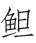

岧峣太华俯咸京 [1] ，天外三峰削不成 [2] 。武帝祠前云欲散，仙人掌上雨初晴 [3] 。河山北枕秦关险，驿路西连汉畤平 [4] 。借问路旁名利客 [5] ，何如此地学长生 [6] ？
【题解】
华阴，唐为关内道华州属县，因在华山之北而得名，今属陕西。此诗当为崔颢赴长安途经华阴而作。阴，一作“山”。
【评析】
此诗前六句，写雨后华山雄奇壮观景象，虚实相生，远近结合，古今并举，气势雄浑宏阔，寓含沧桑之感。写华山，处处不离帝都长安，武帝祠、仙人掌、秦关、汉畤，皆为帝都附近景物，古今兴废尽在其中。末联即景寄慨，看似突兀，妙在暗合。秦皇、汉武，你争我夺，皆为名利。盛衰兴亡，朝代更迭，莫非名利。古今名利客，都是天地间的匆匆过客，唯有华岳高耸天外，俯视帝都，亘古不变，屹然长存。结句“何如此地学长生”，感慨深沉，含意不尽。
【注释】
[1] 岧（tiáo）峣（yáo）：山势高峻貌，曹植《愁赋》：“登岧峣之高岑。”太华：即华山，在华阴县南八里。咸京：秦都咸阳，在唐长安西四十里，此代指长安。
[2] 三峰：指华山的南峰（落雁峰）、东峰（朝阳峰）、西峰（莲花峰）。天外：形容三峰高耸。《山海经•西山经》：“太华之山，削成而四方，其高五千仞，其广十里。”削成：谓悬崖峭壁如一刀削成，直落万丈，极力形容其陡峭。削不成：则谓非人工所能为。
[3] 武帝祠：即汉武帝所建巨灵祠。在朝阳峰东北石楼峰，东壁有石髓凝结，黄白相间，歧出如指掌，故称仙掌崖。神话传说，有河神巨灵，左手托起华山，右足蹬去中条山，给黄河劈出一条入海的河道，排出洪水，拯救了万民。仙人掌：即巨灵推山时留下的手印。
[4] 秦关：指潼关、函谷关。汉畤（zhì）：指汉五帝畤，即鄜畤、密畤、吴阳上畤、吴阳下畤、北畤，地在今陕西凤翔县南。畤：古代祭天地五帝之处。二句为“北枕河山秦关险，西连驿路汉畤平”的倒文，极写华山地势的险要。
[5] 名利客：指汲汲于追求功名利禄的人。曹植《虾

篇》：“俯观上路人，势利唯是谋。”[6] 何如：哪赶上。学长生：指求仙学道。